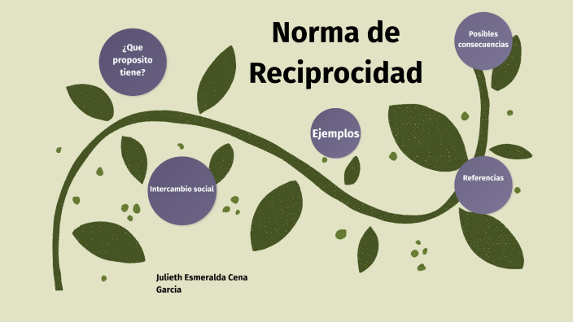

Normas de comportamiento y reciprocidad
Las normas de comportamiento y la reciprocidad son conceptos fundamentales en antropología y sociología, y se abordan desde diversas perspectivas teóricas, incluido el funcionalismo y el particularismo histórico. Aquí exploramos estos conceptos, sus funciones en la sociedad y cómo se entienden en diferentes contextos culturales.
Normas de comportamiento
Definición Las normas de comportamiento son reglas y expectativas que guían la conducta de los individuos dentro de una sociedad. Estas normas pueden ser formales (leyes y reglamentos) o informales (costumbres y tradiciones).
Funciones de las Normas de Comportamiento
1. Mantenimiento del Orden Social: Las normas ayudan a mantener el orden la previsibilidad en las interacciones sociales, facilitando la cooperación y reduciendo los conflictos. 2. Socialización: A través de la socialización, los individuos aprenden y internalizan las normas de su sociedad, lo que les permite funcionar adecuadamente dentro de su contexto cultural. 3. Control Social: Las normas actúan como mecanismos de control social, sancionando comportamientos desviados y recompensando los comportamientos conformes, lo que refuerza la cohesión social. 4. Identidad Cultural: Las normas reflejan y perpetúan los valores y creencias de una cultura, contribuyendo a la identidad y cohesión del grupo.
Reciprocidad
Definición La reciprocidad es el intercambio de bienes, servicios o favores entre individuos o grupos, basado en la expectativa de que las acciones serán devueltas de manera equivalente.
Tipos de reciprocidad
1. Reciprocidad Generalizada: Involucra el intercambio sin la expectativa inmediata de retorno. Es común en relaciones familiares y de amistad cercana. Ejemplo: un padre cuidando de su hijo sin esperar un retorno inmediato. 2.Reciprocidad Balanceada: Implica un intercambio directo y aproximadamente equivalente en un periodo de tiempo definido. Ejemplo: intercambio de regalos entre amigos durante las festividades. 3.Reciprocidad Negativa: Se refiere a intercambios donde una parte busca obtener más de lo que da, a menudo en contextos de competencia o con personas fuera del grupo cercano. Ejemplo: regatear en un mercado para obtener el mejor precio.
Conclusión Las normas de comportamiento y la reciprocidad son esenciales para el funcionamiento de las sociedades. Proporcionan estructura y estabilidad, facilitan la cooperación y el intercambio, y refuerzan la cohesión social y la identidad cultural. Entender estos conceptos desde una perspectiva antropológica y sociológica nos permite apreciar la diversidad y complejidad de las interacciones humanas en diferentes contextos culturales.
REPRESENTACION
